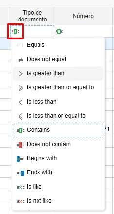
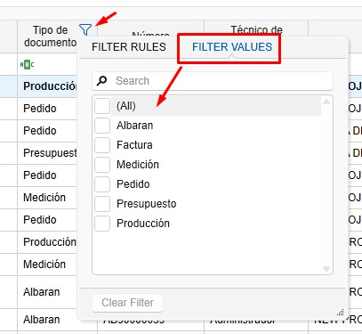
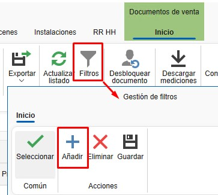

Gestión de filtros
1. Introducción
Este manual está diseñado para orientar a los usuarios en el uso de filtros y filtros personalizados. Su función principal es optimizar la velocidad de búsqueda y mejorar la organización de la vista en todos los listados de los aplicativos.
2. Gestión de filtros en listados
Los filtros permiten personalizar la visualización de los documentos en los listados. Sigue estos pasos:
2.1. Acceder a los filtros
- En la cabecera de los listados, utiliza los filtros para definir qué columnas y datos deseas ver.

- Por ejemplo, puedes filtrar por "Presupuestos" que muestre solo las columnas necesarias (empresa, proyecto, fecha de solicitud, estado del documento, técnico del proyecto, tipo de documento, etc.).

- En el campo de buscar bajo de la cabecera hay un icono ABC donde se puede seleccionar las condiciones que quieres que se cumpla para buscar un valor.

- Para filtrar por lo valores de filtro, desde la cabecera clicar sobre el embudo y desde ahí se puede seleccionar los valores que quieras filtrar.

- Usa
Ctrl + Fpara buscar en el listado.

2.2. Guardar filtros personalizados
- Organiza las columnas según tus necesidades. Puedes eliminar, añadir y cambiar la posición de las columnas haciendo clic derecho sobre cualquier cabecera.

- Otra opción para cambiar la posición o eliminar columnas es arrastrarlas.

- Desde "Filtros", accede a "Gestión de filtros" y añade un nuevo filtro.

- Guarda el filtro con un nombre específico (ej. "Presupuesto 2").

2.3. Guardar vista
- Desde cualquier documento o desde un proyecto se puede organizar las columnas o los filtros y luego guardar la vista desde Configuración ventana - Guardar vista:

Cada vez que vuelvas a entrar se vera la vista que se habia guardado
Nota: Cada usuario puede tener sus propios filtros y vistas guardados.
 Español
Español
 English
English
 Italiano
Italiano
 Português
Português